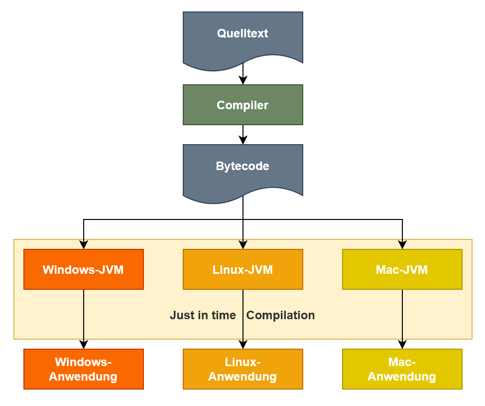
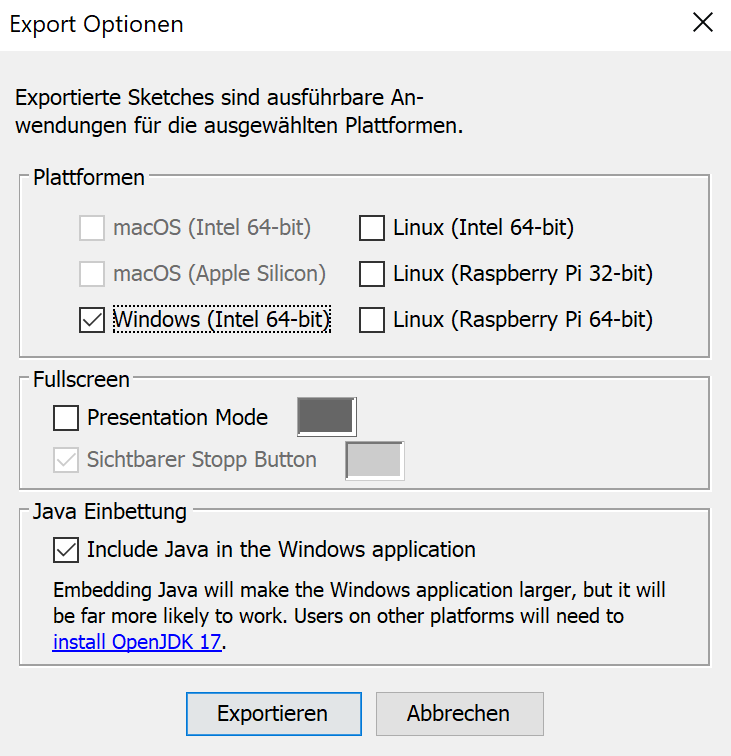

Entwicklungsumgebung (IDE)
Software wird fast immer in einer sogenannten Entwicklungsumgebung entwickelt. Was bedeutet das?
Naja, du könntest zum Beispiel auch eine Processing-Anwendung erstellen, indem du den Code im normalen Standard-Editors deines Computer eintippst. Das ist aber nicht besonders komfortabel, daher wird eine Processing-Anwendung fast immer im Processing Editor erstellt. Processing ist eine Entwicklungsumgebung.
Eine Entwicklungsumgebung ist die Integration von verschiedenen Entwicklungswerkzeugen in ein Hauptprogramm zur effizienten und effektiven Softwareentwicklung. Sie wird oft mit dem englischen Begriff IDE (Integrated Development Environment) abgekürzt.
Jede Programmiersprache braucht verschiedene Komponente an Entwicklungswerkzeugen, um entwickelt werden zu können. Deswegen redet man auch von einer Entwicklungsumgebung für Java oder für C++ usw. Diese IDEs haben alle verschiedene Bestandteile.
Der Vorteil von so einer IDE ist, dass du "nur" ein Programm installieren musst und da alles dabei ist, was du brauchst. Nur steht in diesem Fall in Anführungszeichen, weil beim erstmaligen Installieren einer solchen IDE in der Regel noch ein paar weitere Komponenten installiert werden müssen, die man generell für Java braucht. Wenn du dich aber später für eine andere IDE entscheidest, musst du diese nicht neu installieren.
Eine der geläufigsten IDEs für Java ist Eclipse von der Eclipse Foundation bzw. Xcode von Apple Inc.
Java Compiler (Javac)
Wir erinnern uns nun nochmal am Sprint 1 zurück. Hier haben wir gelernt, was ein Compiler und ein Interpreter sind. Hier wollen wir noch ein wenig tiefer sind Thema einsteigen.
Der Compiler erzeugt vor dem Ausführen des Programms Plattform-abhängigen Maschinencode, der nur auf bestimmten Betriebssystemen ausgeführt werden kann. Der Java Compiler (javac) übersetzt den Quellcode, den du schreibst, in plattformunabhängigen Bytecode. Er ist Teil des IDE.
Java-Laufzeitumgebung (JRE)
Das Gegenstück zur Entwicklungsumgebung ist die Laufzeitumgebung. Sprich die Umgebung, in der das Programm laufen sollen. Nicht jede Programmiersprache braucht eine Laufzeitumgebung.
Java braucht eine Laufzeitumgebung. Diese wird oft mit englischen Begriff JRE (Java Runtime Environment) abgekürzt.
Der Grund, warum Java eine JRE braucht ist der, dass wir ja bisher vom Compiler nur den plattformunabhängigen Bytecode haben, der noch auf die Plattform übersetzt werden muss, auf der die Software laufen soll. Das übernimmt die JRE. Beziehungsweise die Java Virtual Machine (JVM), die Teil des JREs ist.
Wichtig ist, dass wenn du Java-Anwendungen entwickeln und testen möchtest, du nicht nur eine Java-IDE, sondern auch eine JRE brauchst.
Java Virtual Machine (JVM)
Bei der JVM (Java Virtual Machine) handelt es sich um eine native Anwendung, die den Bytecode nimmt und ihn für die jeweilige Plattform aufbereitet und übersetzt. Das bedeutet, dass es eine JVM für Window, Linux und Mac gibt.
Die JVM bekommt den Bytecode übergeben und kompiliert ihn in das Zielsystem und führt ihn dann direkt aus. Die Kompilierung erfolgt als Just In-Time Compliation (JIT-Kompilierung).
Im Gegensatz zu Compilern, die in einem Durchgang den gesamten Quelltext in ein ausführbares Programm umwandeln, wird der JIT-Compiler hauptsächlich während der Programmausführung tätig. Er kompiliert dann nur die Programmteile, die tatsächlich ausgeführt werden sollen.

Deine eigene Processing/Java Anwendung
Genau das, was nun oben in der Theorie erklärt wurde, wollen wir nun einmal umsetzen, indem wir unsere erste eigene, fertige Anwendung mit Processing machen. Keine Angst, das ist ganz leicht. Das meiste macht Processing für dich. Bisher haben wir nur den Processing Editor verwendet und - wenn wir unsere Anwendung testen wollten - einfach auf Play gedrückt. Dabei handelt es sich aber eigentlich nur um eine Art Vorschau, keine richtige Anwendung. Um eine fertige Anwendung zu erstellen kannst du in Processing einfach über das Menü → Datei → Exportieren deine Anwendung exportieren. Wenn du das tust, öffnet sich ein Fenster, dass so - oder so ähnlich - wie rechts gezeigt aussieht.
Hier musst du zunächst festlegen für welche Plattform du deinen Code compilieren möchtest. Das ist genau das, was wir oben im Diagramm gesehen haben: Je nach Plattform, muss der Compiler der Code für eine andere JVM compilieren.
Dann kannst du noch auswählen, ob du deine Anwendung z.B. im Präsentations-Modus starten möchtest.
Als letztes kannst du entscheiden, ob Java für Windows-64-bit Systeme eingebunden werden soll. Hier ist es sinnvoll einen Haken zu setzen, außer du möchtest Speicher sparen.
Wenn du dann auf Exportieren klickst, erstellt die Processing eine fertig Anwendung im Ordner deines Processing-Projekts. Dort befinden sich dann (im Falle von Windows) zwei Ordner:
- application.windows32
- application.windows64
In diesen Ordern findest du dann deine Anwendung in Form einer .exe-Datei (im Falle von Windows).

WICHTIG: Damit deine Anwendung auch funktioniert, reicht es nicht aus nur die .exe-Datei zu haben. Wenn du deine Anwendung verschieben oder kopieren möchtest solltest du immer den gesamten Ordner, in dem sich die Anwendung befindet, kopieren (also zusammen mit den Ordern lib, source, etc.)
Bei Linux oder Mac sieht dieser Prozess etwas anders aus, ist aber eigentlich der gleiche. Bei Linux heißen z.B. die Ordner application.linux32 o.ä. aber im großen und ganzen ist alles gleich.
Zusammenfassung
- Software wird fast immer in einer Entwicklungsumgebung (auch IDE - Integrated Development Environment) entwickelt. Processing ist genauso eine IDE.
- Ein Teil der IDE ist der Compiler. Bei Java heißt dieser javac (Java Compiler).
- Manche Software braucht eine Laufzeitumgebung. Software die mit Java entwickelt wurde braucht ein Java Runtime Environment (JRE).
- Die JRE übersetzt den plattformabhängigen Bytecode in Code, den deine Plattform (Windows, MAc, Linux) lesen kann.
- Diese Übersetzung wird von der Java Virtual Machine (JVM) übernommen, die Teil der JRE ist.
- die JVM übersetzt den Code während der Programmausführung, wodurch es sich um eine Just-In-Time-Compilation (JIT) handelt.
- In Processing kannst du aus deinem Code eine fertige Anwendung machen.
- Hier musst du nur wählen, für welche Plattform du deine Anwendung machen willst.